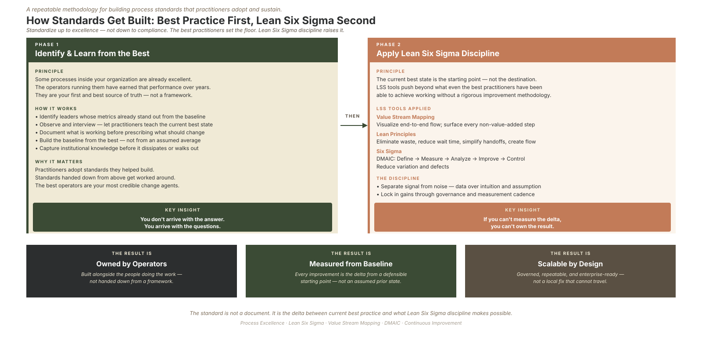

Part 5 of the "How Would You Build It?" series · by Jeffrey Benson
Here is the failure mode that ends most process functions, and it almost never looks like failure while it's happening. The team documents diligently. The standards get written. The binders fill up. And six months in, the functional leaders have quietly gone back to doing things their own way, routing around the very function that was supposed to help them.
The lesson took me years to fully absorb: adoption, not documentation, is the binding constraint. A standard nobody follows is not a standard. It's a dead document with a version number. So the playbook for how a process function operates has to be built around earning adoption, and that starts with three principles that matter more than any deliverable.
Principle
Principle 1: Service before standards
The function operates as a service organization first, and a standards organization second. Functional leaders pull you in when your help is real and fast. They route around you when your value is theoretical. That's not unfair; it's just how busy people allocate trust.
In practice that means a few hard commitments:
- Speed of help is the first measure of value. When a Meridian branch leader has a process pain point, the response is measured in days, not weeks. If using the process team is slower than working around it, people will work around it, every time.
- Standards are earned, not asserted. No standard gets published for a process the team hasn't walked through with the people actually doing the work.
- Adoption is the scoreboard. Three months in, if functional leaders aren't requesting the team's help, the function has failed, regardless of how much it has documented. Pull, not compliance, is the metric.
Principle
Principle 2: Co-design, validate on-site, and have them sign
Any standard that touches operational work is co-designed with the people accountable for it, validated where the work happens, and signed by them before it's published.
That last part is not a formality. When a branch leader's name is on the standard as a co-author, two things change: the standard is better, because it was built by someone who knows the work, and it gets adopted, because people don't route around something they helped build.
There's a quieter principle nested inside this one that I care about a lot: standardize up, not down. Standards should be drawn from the practices of the teams doing the work best, then offered to everyone else as the new model. The lazy version of standardization averages everyone toward the middle and quietly punishes your best performers. The good version finds what your strongest branch is doing differently, makes that the standard, and gives the struggling branches a proven path instead of a template. One regresses to the mean; the other lifts the floor. Only one is worth doing.

Process Standardization Lifecycle: Finding and learning from the best practitioners first, then applying Lean Six Sigma DMAIC discipline to lift the floor.
Principle
Principle 3: Respect the boundaries
The function defines what a process needs. The functional partners own how their systems and their people deliver against it.
That means the process team doesn't duplicate work done elsewhere or compete for territory. Technology owns the enterprise systems. Operations owns the floor. The process function works upstream of all of them, shaping the requirements that inform their work, without trying to annex their domains. Where a boundary is genuinely ambiguous, the function defers. Lane discipline is more valuable than scope expansion, and it's a big part of how the function stays trusted rather than feared.
Governance
The playbook is the institution
Those three principles govern how the team behaves. The playbook itself is the written architecture that makes the function durable beyond any one person, and it gets built domain by domain, in working versions, not as a single grand publication. Its chapters cover the predictable ground: the process taxonomy, documentation standards, the KPI framework, how process standards inform technology, change management, cross-domain governance, and continuous improvement.
I won't march through all of them here, but two deserve to be called out, because they're where good intentions usually go wrong.
The co-authorship standard. Every published standard names the functional partner who co-designed it. This isn't a courtesy; it's the load-bearing requirement that makes adoption possible. When the standards do need to land as real behavior change, the framework I reach for is the one I've written about in detail in my ADKAR series: awareness, desire, knowledge, ability, reinforcement. Documentation tells people what changed. ADKAR is how the change actually sticks. And the whole posture, partnering rather than policing, is the same one I've described in my work on servant leadership: the function exists to make the operators successful, not to make itself important.
Incident response: site authority is absolute. This one is non-negotiable. When something is actively going wrong at a branch (a safety event, a service outage, a crisis in progress), the site leader's authority is absolute, and process governance is not in the room. The process function's contribution to incidents lives entirely in the structure around them: the documentation standard, the post-incident review, the cross-site trend analysis, the lessons that cycle back into the standards. Any rule we'd propose that could introduce a moment of hesitation during a live emergency is rejected by design. Knowing where your governance stops is as important as knowing where it starts.
Conclusion
Why this is the hard part
Everything in the first four parts of this series is, frankly, the analytical work, and analytical work is the part I find easiest. This part, earning the right to be useful, co-authoring instead of dictating, knowing when to defer, is the human work, and it's what actually determines whether any of the architecture ever gets used.
A process function that leads with standards gets tolerated, then ignored. A process function that leads with service gets invited back. The order matters.
So here's the question I'd leave you with: when your process, quality, or transformation team shows up, do people lean in, or do they brace? The honest answer tells you almost everything about whether that function is earning adoption or just generating documentation. I'd genuinely like to hear what shapes the difference in your experience.
Next in the series: Part 6, the hardest discipline of all, committing the function to a number and being willing to wind it down if it can't earn its keep.
Sources: Independent research on Process Excellence and Global Process Ownership (GPO) framework deployments. Practical applications of standard work, organizational design, and continuous improvement metrics in high-growth rollups.